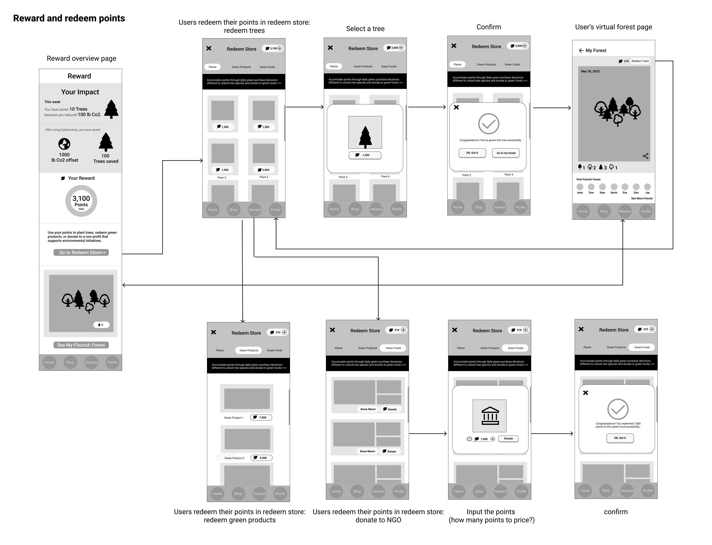
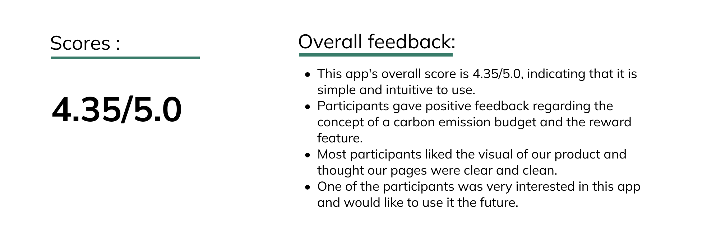

Can the purchase decisions you make every day at the grocery store truly impact the environment? Greenhouse gas emissions from the grocery industry associated with agriculture, shipping, and food processing and storage truly are a good proxy for many environmental issues. However, few grocery shopping platforms inform and encourage users to make green purchasing decisions. In order to make everyday green purchase decisions easier than ever, we designed a mobile application that includes data on the carbon emissions of common grocery items as well as a financial incentive program that rewards eco-friendly choices.
My role includes design concept initialization, user research (exploratory & in-depth), strategy & design discussions, mid-fidelity prototyping & testing, high-fidelity prototyping & testing, and final design with its validation.
Feb. 2022- May. 2022
Iris, Aril, Leah
UX Researcher
Product Designer
Figma
FigJam
Whiteboard
Slack
Zoom
Usertesting.com
Competitive Analysis
User Interviews
Journey Map
Information Architecture
Wireframes
Content Maps
Design System
Prototyping
User Testing
Iteration

Our team performed a thorough competitive analysis to look at how other products approached environmental awareness and to figure out how we could improve our strategy.
Our Competitors:
Goal-Setting, Visualizing Impact, Reward, and Gamification are the aspects we considered while conducting competitive research.
Overall, competitive analysis provided us with the following insights:

We conducted 11 user interviews during the discovery phase of this project to gain a better understand the shopping habits of participants and whether they consider environmental factors when shopping.
The data was then used to create an affinity diagram in FigJam to help us find the insights. Overall, we discovered that when it came to grocery shopping, the majority of participants did not consider carbon emissions. Because:

With our design strategies, we started to create the information architecture.

Rationale:
In this section, we generated low-fidelity prototypes for several main flows which would be tested with users in further steps, illustrating how these pages are linked and flowing from one to one.
The app will introduce the rewards system to users during the onboarding process and will also create a carbon budget for users.
Lo-Fi Concept 2: Shopping & Check outAs with other online grocery store websites, users are able to search for a specific product or a category in the search bar and then check the product description(a. Carbon emissions you can save; b. Social impacts; c. Comparison between typical products and the product users reviewed). After that, our application would automatically recommend replaceable green products with lower carbon emissions to users.
 Lo-Fi Concept 3: Redeem the points
Lo-Fi Concept 3: Redeem the points
The app will display users' environmental impact from green purchases. Additionally, they can use their eco-points to get free samples of eco-friendly products, donate their points directly to an eco-fund, or get different kinds of virtual trees by using them.
To gather our findings for further inspiration in both wireframing and high-fidelity prototyping, we created a moodboard.
 Based on the moodboard above, we created a style tile. We found there is an agreement that most designs use green colors as well as plant icons to illustrate the sense of environment and ecosystem. Therefore, we decided to use a variety of green shades as our color palette. Our high-fidelity mockup mainly utilizes green and white colors to emphasize the concept of sustainability, nature, and health.
Based on the moodboard above, we created a style tile. We found there is an agreement that most designs use green colors as well as plant icons to illustrate the sense of environment and ecosystem. Therefore, we decided to use a variety of green shades as our color palette. Our high-fidelity mockup mainly utilizes green and white colors to emphasize the concept of sustainability, nature, and health.
We implemented high-fidelity prototypes based on the style tile we initially decided. For the Hi-fi prototype, we designed pages for main flows including “homepage and product listing page” for users to search products and add to their carts, “product description”, “check-out and replacement product”, “profile”, “redeem and my forest page” - which covers most of sections on our application to make further user test sessions easier and accurate.

We conducted user testing with a Hi-fi prototype. We started revising our Hi-fi prototype based on feedback from the user testing session.


To validate our final design, we conducted 12 unmoderated usability testing sessions on UserTesting.com to validate our high-fidelity prototypes. We set up a main scenario with different tasks with post-task questions to test if there are any usability issues we need to fix. We received both qualitative responses and quantitative data from the participants. If users thought the tasks were simple, they would give them a score of 5. This app's overall score is 4.5/5.0, indicating that it is simple and intuitive to use.
 Click to see the prototype!